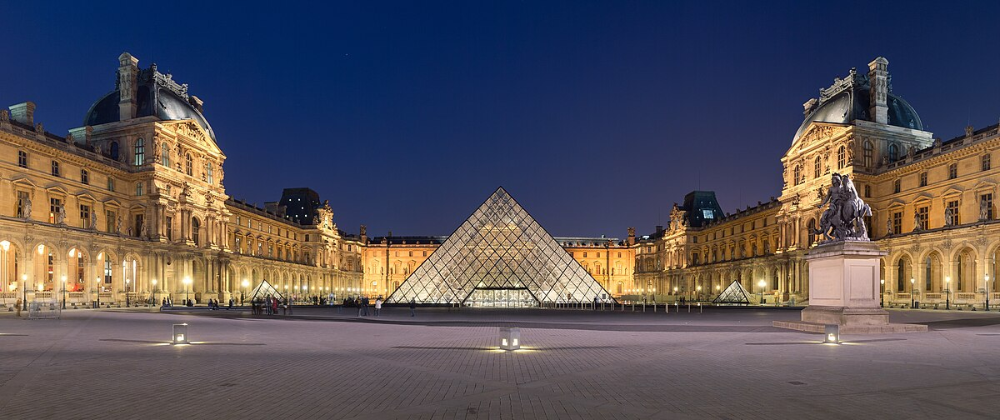
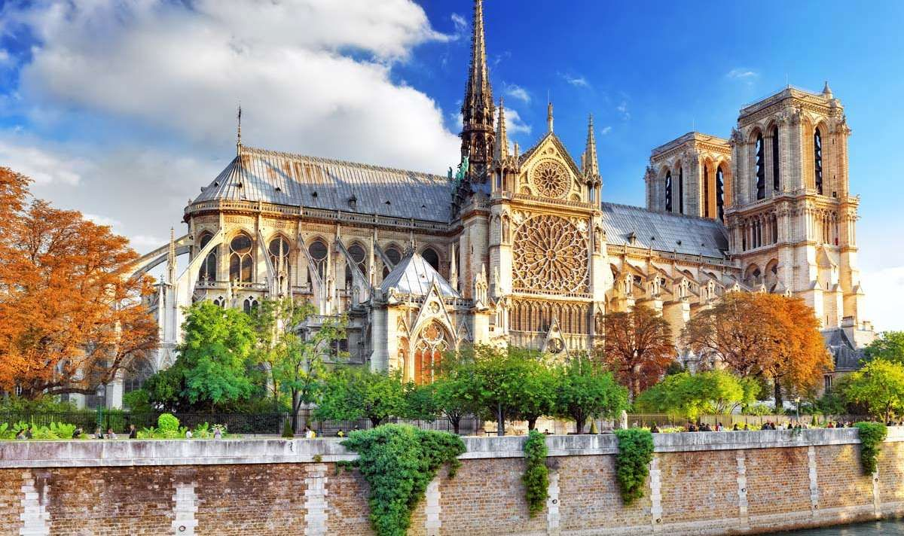

Франція: Країна Культури та Історії
Франція – це чудово! Країна багата на історію, культуру, мистецтво та кулінарні шедеври. Це одна з найпопулярніших туристичних напрямків у світі. Ця країна славиться своєю багатою історією, культурою, архітектурою, кухнею та виноробством. Тут кожен знайде щось для себе: від величних замків і музеїв до мальовничих сіл і пляжів. Проте, перш ніж вирушати в дорогу, рекомендується дізнатися про деякі цікаві факти про Францію та її мешканців, щоб зробити вашу подорож максимально приємною та безпроблемною.
Загальні відомості про Францію
| Офіційна назва | Французька Республіка |
|---|---|
| Столиця | Париж |
| Офіційна мова | Французька |
| Населення | близько 67 мільйонів |
| Площа | 643,801 км² |
| Валюта | Євро (€) |
Що подивитися у Франції насамперед?
Зберегти виключно приємні спогади про поїздку до найромантичнішої країни світу допоможе відповідальний підхід до організації екскурсійної програми.
Ейфелева вежа
Ейфелева вежа є однією з найвідоміших архітектурних споруд у світі та символом Парижа. Вона була побудована для Всесвітньої виставки 1889 року, яка проводилася на честь 100-річчя Французької революції. Проектом керував інженер Гюстав Ейфель, і хоча спочатку вежа отримала суперечливі відгуки, з часом вона стала справжнім символом французької культури. Висота вежі становить 324 метри, і вона має три рівні для відвідувачів, з яких відкривається захоплюючий вид на Париж.

Лувр
Один з найбільших та найвідоміших музеїв світу, розташований у центрі Парижа. Він спочатку був королівським палацом, але з 1793 року функціонує як музей. Лувр відомий своїми багатими колекціями мистецтва, серед яких такі шедеври, як "Мона Ліза" Леонардо да Вінчі, "Венера Мілоська" та багато інших. Музей також славиться своєю сучасною скляною пірамідою, яка була збудована у 1989 році за проектом архітектора Йо Мінг Пея.
Ніцца
Місто на Лазурному березі у південно-східній Франції. Відоме своїм середземноморським кліматом, красивими пляжами, а також багатою культурою та історією. Променад Англійців (Promenade des Anglais) – це знаменита набережна, яка проходить вздовж узбережжя і є популярним місцем для прогулянок. Ніцца також відома своїм старим містом, де збереглася архітектура минулих століть, вузькі вулички та численні кафе й ресторани.

Собор Паризької Богоматері
Готичний католицький собор на острові Сіте в Парижі. Його будівництво розпочалося в 1163 році і тривало понад два століття. Собор відомий своїми величними архітектурними елементами, включаючи вітражі, гаргулії та знамениті дзвони. Собор сильно постраждав під час пожежі 15 квітня 2019 року, але наразі ведуться активні роботи з його відновлення.
Єлисейські поля
Одна з найвідоміших та найкрасивіших вулиць у світі, що простягається від Тріумфальної арки до площі Згоди в Парижі. Вулиця є популярним місцем для прогулянок, шопінгу та розваг, тут розташовані численні магазини, кафе, театри та ресторани. Щороку 14 липня на Єлисейських полях проходить парад на честь Дня взяття Бастилії, а також вони є фінішною точкою Тур де Франс.
Ці п'ять визначних пам'яток – лише невелика частина того, що може запропонувати Франція, країна з багатою історією, культурою та архітектурною спадщиною.
Що можна скоштувати?
Фуа-гра
Делікатес французької кухні, що виготовляється з печінки качки або гуски, яка була спеціально відгодована.
Багет
Класичний французький хліб, що став популярним на початку 20 століття. Його довга й тонка форма дозволяла швидше випікатися, що було важливо в умовах міського життя.
Рататуй
Походить з Провансу, регіону на південному сході Франції. Це традиційна селянська страва, яку готували з літніх овочів.
На завершення, Франція є країною, яка поєднує багату історію з сучасним прогресом, культурне розмаїття з економічною стабільністю, і має значний вплив на світову арену завдяки своїй політичній, економічній та культурній могутності.